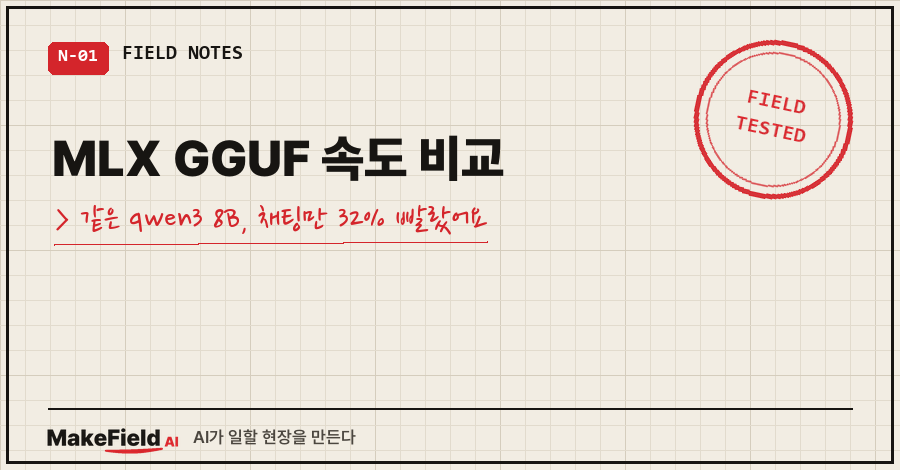
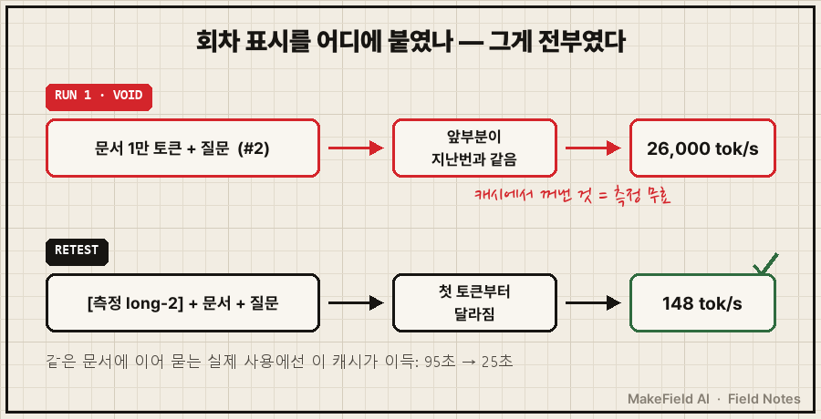
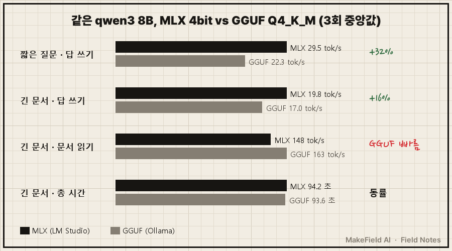
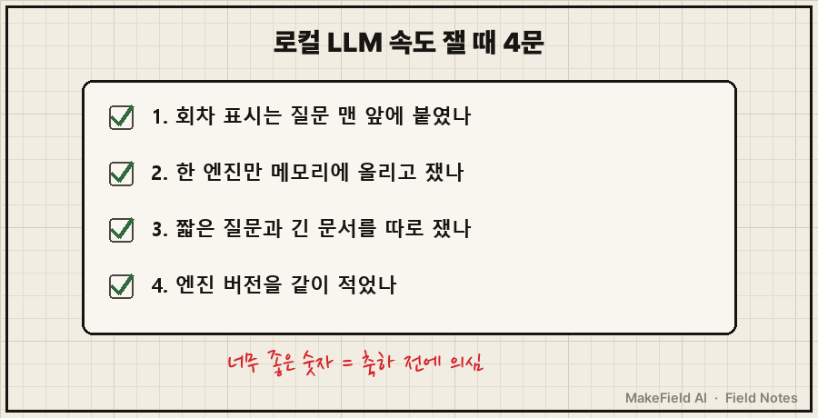

MLX GGUF 속도 비교, 제 맥북에서 직접 재 본 결론부터 적을게요.
같은 qwen3 8B 모델을 MLX 4bit(LM Studio)와 GGUF Q4_K_M(Ollama)으로 돌리면, 짧은 질문에 답을 쓰는 속도는 MLX가 초당 29.5토큰 대 22.3토큰으로 32% 빨랐습니다. 하지만 1만 토큰짜리 문서를 붙여 넣고 물으면 총 시간이 94.2초 대 93.6초로 사실상 같았어요. (2026년 10월 12일, MacBook Pro M1 Pro 32GB, 3회 중앙값)
그런데 이 표가 나오기 전에, 먼저 엉터리 숫자가 하나 나왔어요.
문서 읽는 속도가 초당 26,000토큰.
대박이 아니라 측정 사고였습니다.
저는 현장에서 계측값이 갑자기 좋게 튀면 공정보다 계측기부터 의심하는 버릇이 있는 엔지니어예요. 그 버릇이 이번엔 맥북 앞에서 쓸모가 있었습니다.
1. MLX와 GGUF, 뭐가 다른 건가요
MLX는 애플이 만든 애플 실리콘 전용 머신러닝 프레임워크이고, GGUF는 llama.cpp 계열 엔진(Ollama 포함)이 쓰는 모델 파일 형식입니다. 같은 모델이라도 어느 쪽으로 압축해 돌리느냐에 따라 속도가 달라질 수 있어요.
MLX 공식 저장소는 스스로를 이렇게 소개합니다.
MLX is an array framework for machine learning on Apple silicon,
brought to you by Apple machine learning research.LM Studio를 깔고 엔진 목록을 보면 이 차이가 바로 보여요.
$ lms runtime ls
LLM ENGINE SELECTED MODEL FORMAT
llama.cpp-mac-arm64-apple-metal-advsimd@2.55.0 ✓ GGUF
mlx-llm-mac-arm64-apple-metal-advsimd@1.13.1 ✓ MLX엔진이 두 개예요. GGUF용(Ollama와 같은 계열)과 MLX용. Ollama만 쓰던 저한테는 이게 LM Studio를 깔 이유였습니다.
설치는 brew install --cask lm-studio 한 줄, 57초면 끝났어요. 첫 화면에서 다른 모델을 받으라고 권하길래 "skip 하면 되나?" 하고 그냥 Skip을 눌렀습니다. 문제는 모델 다운로드였죠.
2. 4.62GB 받는 데 1시간 22분
[█████▍ ] 24.10% | 1.11 GB / 4.62 GB | 29.80 MB/s
Error: Download failed: aborted - You can try to resume the download within LM Studio.24%에서 끊기고
다시 받으니 1시간 19분 만에 88%에서 또 끊기고
또 받으니 97%에서 끊기고..
네 번째에 겨우 끝났어요. 속도는 초당 30MB에서 0.6MB까지 들쭉날쭉했습니다.
겪은 사람만 아는 팁 하나. 끊겨도 같은 명령(lms get qwen/qwen3-8b --mlx -y)을 다시 치면 이어받습니다. 받다 만 파일이 .part로 남아 있으니 절대 지우지 마세요. 저도 처음엔 지우고 새로 받을 뻔했어요.
3. 초당 26,000토큰이 나왔을 때 무엇부터 의심하나요
벤치마크 숫자가 말이 안 되게 좋으면 캐시를 먼저 의심해야 합니다. 같은 입력을 반복하는 측정은 캐시가 있는 시스템에서 측정이 아니에요.
측정은 이렇게 짰어요. 짧은 질문 하나, 그리고 제 AI 공부 노트(26KB, 약 1만 토큰)를 통째로 붙인 긴 질문 하나. 각 3회, 답은 512토큰까지, 온도 0. 한쪽 엔진을 잴 땐 다른 쪽은 메모리에서 내렸습니다. 명령 정리와 실행은 AI(Claude Code)에게 맡겼고요.
회차를 구분하려고 질문 끝에 (#1), (#2)를 붙였더니 이렇게 나왔어요.
lmstudio long #1 생성 511tok 19.5 tok/s | 프롬프트 10347tok 146.3 tok/s | 총 95.3s
lmstudio long #2 생성 511tok 19.3 tok/s | 프롬프트 10347tok 26530.8 tok/s | 총 25.2s
lmstudio long #3 생성 511tok 18.6 tok/s | 프롬프트 10347tok 26194.9 tok/s | 총 25.7s2회차부터 문서 읽는 속도가 180배로 뛰었죠. 원인은 접두 캐시(prefix cache)였어요. 질문 앞부분 1만 토큰이 매번 똑같으니, LM Studio가 지난번에 읽은 결과를 그대로 꺼내 쓴 겁니다. 회차 표시가 맨 끝에 있어서 '다른 질문'으로 보이지도 않았고요.

그래서 1차 결과는 전부 버렸어요. 표시를 질문 맨 앞([측정 long-1] + 문서)으로 옮기고 다시 쟀더니 3회 모두 147~149 tok/s로 고르게 나왔습니다.
재미있는 건, 실제로 쓸 때는 이 캐시가 진짜 이득이라는 거예요. 같은 문서에 질문을 이어서 하면 두 번째부터 95초가 25초로 줄어요. 측정에선 함정, 사용에선 선물. 여러분 벤치마크엔 혹시 같은 입력이 반복되고 있지 않나요?
4. MLX GGUF 속도 비교, 다시 재 보니 MLX가 빠른 건 어디까지인가요
| 항목 (3회 중앙값) | MLX 4bit (LM Studio) | GGUF Q4_K_M (Ollama) | 차이 |
|---|---|---|---|
| 짧은 질문 — 답 쓰는 속도 | 29.5 tok/s | 22.3 tok/s | MLX +32% |
| 긴 문서 — 답 쓰는 속도 | 19.8 tok/s | 17.0 tok/s | MLX +16% |
| 긴 문서 — 문서 읽는 속도 | 148 tok/s | 163 tok/s | GGUF +10% |
| 긴 문서 — 총 시간 | 94.2초 | 93.6초 | 사실상 같음 |
| 파일 크기 | 4.62GB | 5.2GB | MLX 11% 작음 |

한 줄씩 풀면 이래요.
- 채팅처럼 짧게 묻고 길게 받는 일은 MLX가 확실히 빠릅니다. 512토큰 답이 23초에서 17초로 줄었어요.
- 긴 문서를 붙이는 일에선 차이가 사라집니다. 94초 중 약 70초가 '문서 읽기'인데, 거기선 GGUF가 10% 빨라요. 쓰기에서 번 시간을 읽기에서 잃는 셈이죠.
- 파일이 작아서만 빠른 것도 아니었어요. M1 Pro의 메모리 대역폭은 애플 공식 사양으로 200GB/s인데, 초당 읽어 들인 양으로 환산하면 MLX 29.5×4.62 = 136GB/s(68%), GGUF 22.3×5.2 = 116GB/s(58%)입니다.
- 하루 전 Ollama 측정값 22.0 tok/s와 이번 22.3이 거의 같아서, 측정 자체는 재현된다고 봤어요.
⚠ 두 파일은 같은 모델을 다른 방식으로 압축한 것이라 답의 품질까지 같다고 할 수 없어요. 이번엔 속도만 쟀고, 품질은 미검증으로 남겼습니다.
5. 다시 잰다면 지킬 것 4가지

- 회차 표시는 질문 맨 앞에 — 끝에 붙이면 캐시가 다 받아먹어요.
- 한 엔진만 메모리에 올리고 재기 —
lms unload --all후 Ollama를 쟀습니다. - 짧은 질문과 긴 문서를 따로 재기 — 하나만 재면 "MLX가 무조건 빠르다" 같은 반쪽 결론이 나와요.
- 엔진 버전을 같이 적기 — 앱을 여는 사이 llama.cpp 엔진이 2.54.0에서 2.55.0으로 저절로 올라가 있더라고요. 몇 달 뒤 숫자가 다르면 버전부터 보세요.
자주 묻는 질문
Q. 맥북이면 무조건 MLX가 낫나요?
제 측정에선 채팅형 사용이면 MLX, 긴 문서를 통째로 붙이는 작업이면 어느 쪽이든 비슷했어요. 품질은 아직 비교 전이라, 속도만 보고 갈아타진 않았습니다.
Q. LM Studio 화면을 AI가 직접 조작할 수 있나요?
저도 물어봤는데, 맥 화면 제어 권한이 없어서 안 됐어요. 대신 터미널의 lms 명령으로 모델을 올리면 LM Studio 창에도 그대로 반영됩니다. 캡처는 제가 Cmd+Shift+4로 찍었어요.
Q. 같은 맥에서 모델별 속도는 어느 정도인가요?
Ollama 기준 qwen3:8b 22.0, qwen3:14b 12.6, gpt-oss:20b 32.7 tok/s였어요. 그 측정과 할루시네이션 실험은 로컬 LLM 할루시네이션 실험에 정리해 뒀습니다.
다음엔 같은 질문을 두 형식에 똑같이 던져서, 빨라진 만큼 답이 나빠지진 않는지 품질 쪽을 재 볼게요. 측정 스크립트 뼈대와 그 결과는 makefield.ai 실험 기록에도 올려 둡니다.
출처
- Apple, ml-explore/mlx 공식 저장소 → https://github.com/ml-explore/mlx (2026-10-27 확인)
- Apple 지원, MacBook Pro (14-inch, 2021) 기술 사양 — M1 Pro 200GB/s → https://support.apple.com/en-us/111902 (2026-10-27 확인)
- 측정 환경: 2026-10-12 개인 맥북 실측(MacBook Pro M1 Pro 32GB, macOS 26.6.2, LM Studio 0.4.26, Ollama 0.40.3)
태그: #MLXGGUF속도비교 #MLX #GGUF #LMStudio #Ollama #올라마 #맥북로컬LLM #로컬LLM속도 #qwen3 #큐웬 #애플실리콘 #양자화 #프롬프트캐시 #로컬AI실험실 #MakeFieldAI